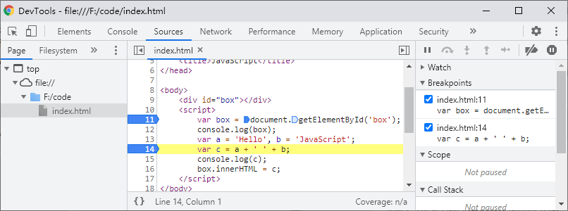
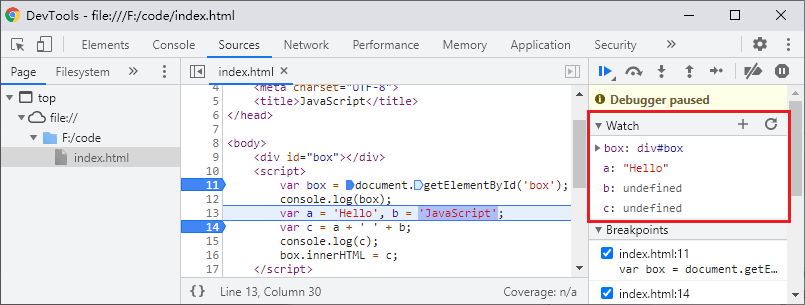

首页 > JavaScript
JS调试（Debug）教程[简明版]
在 JavaScript 开发过程中，代码可能存在一些语法或者逻辑上的错误，导致程序不能得到我们想要的结果，这时就需要我们找到并修复这些错误，我们将查找和修复错误的过程称为调试或代码调试。
调试是程序开发过程中必不可少的一个环节，熟练掌握各种调试技巧，能在我们的工作中起到事半功倍的效果。
在前端开发中，想要快速定位错误，可以借助浏览器内置的调试工具（控制台），通常按键盘上的 F12 就能启动，借助调试工具我们不仅可以很轻松的找到代码出错的位置，还可以通过设置断点（代码执行到断点处会暂停），来检查代码执行过程中变量的变化。

图1：Chrome 控制台
图2：Firefox 控制台
借助控制台提供的信息，我们可以轻松的定位代码中的错误，不过有一点需要注意，就是控制台提供的错误信息不一定百分之百正确，因为某些错误可能是由于另外一个错误直接或间接引起的，所以控制台提示有错误的地方不一定真有问题。
图3：使用 console.log() 来调试程序
使用这种方法调试代码有一个弊端，那就是这些输出语句并不是代码中需要的，虽然它们不会影响代码的运行，但是为了代码更加整洁，在调试完程序后我们需要手动清理干净。
图4：Chrome 调试工具

图5：找到要调试的文件
图7：断点调试
调试过程中，会在调试工具的最右侧的 Scope 栏显示一些数据。此外，还可以在最右侧的 Watch 栏中录入要调试的变量名，这样在调试过程中就能实时看到代码运行中变量的变化。
图8：逐句执行
逐句执行配合在 Watch 栏中录入要调试的变量，能够更清晰的看到变量在代码运行过程中的变化：
调试是程序开发过程中必不可少的一个环节，熟练掌握各种调试技巧，能在我们的工作中起到事半功倍的效果。
在前端开发中，想要快速定位错误，可以借助浏览器内置的调试工具（控制台），通常按键盘上的 F12 就能启动，借助调试工具我们不仅可以很轻松的找到代码出错的位置，还可以通过设置断点（代码执行到断点处会暂停），来检查代码执行过程中变量的变化。
控制台
控制台中能够显示代码中的语法错误和运行时错误，其中包括错误类型、错误描述以及错误出现的位置（即错误所在的行），如下图所示：图1：Chrome 控制台
图2：Firefox 控制台
借助控制台提供的信息，我们可以轻松的定位代码中的错误，不过有一点需要注意，就是控制台提供的错误信息不一定百分之百正确，因为某些错误可能是由于另外一个错误直接或间接引起的，所以控制台提示有错误的地方不一定真有问题。
如何调试 JavaScript 代码
有多种方法可以调试 JavaScript 代码，最简单的方法就是使用 console.log()、document.write()、alert() 等方法来打印程序中各个变量、对象、表达式的值，以确保程序每个阶段的运行结果都是正确的，推荐使用 console.log()，如下例所示：
<!DOCTYPE html>
<html lang="en">
<head>
<meta charset="UTF-8">
<title>JavaScript</title>
</head>
<body>
<div id="box"></div>
<script>
var box = document.getElementById('box');
console.log(box);
var a = 'Hello', b = 'JavaScript';
var c = a + ' ' + b;
console.log(c);
box.innerHTML = c;
</script>
</body>
</html>
运行结果如下图所示：图3：使用 console.log() 来调试程序
使用这种方法调试代码有一个弊端，那就是这些输出语句并不是代码中需要的，虽然它们不会影响代码的运行，但是为了代码更加整洁，在调试完程序后我们需要手动清理干净。
断点调试
断点是浏览器内置调试工具的重要功能之一，通过设置断点可以让程序在我们需要的地方中断（暂停），从而方便我们对该处代码进行分析和逻辑处理。以 Chrome 浏览器为例，要进行断点调试首先需要打开浏览器内置的开发者工具（按 F12 或者单击鼠标右键，在弹出的菜单中选择“检查”），然后在找到并选择“Sources”，如下图所示：图4：Chrome 调试工具
1) 找到要调试的文件
打开调试工具后，需要在工具的左侧找到要调试的文件并单击打开该文件，如下图所示：图5：找到要调试的文件
2) 打断点
给代码打断点非常简单，只需要在单击要调试代码前面的行号即可，若行号被标记为蓝色，则说明已经成功打了断点，如下图所示（在代码的第 11 行和第 14 行打了断点）：

图6：打断点
图6：打断点
3) 断点调试
打好断点后，刷新页面即可进入调试模式，代码执行到断点的位置会暂停，此时我们可以点击页面中的箭头会按 F8 来使代码继续执行到下个断点，如下图所示：图7：断点调试
调试过程中，会在调试工具的最右侧的 Scope 栏显示一些数据。此外，还可以在最右侧的 Watch 栏中录入要调试的变量名，这样在调试过程中就能实时看到代码运行中变量的变化。
4) 逐语句执行
在调试过程中，我们还可以选择让代码逐句执行，只需要点击下图所示的按钮，或者按 F10 即可：图8：逐句执行
逐句执行配合在 Watch 栏中录入要调试的变量，能够更清晰的看到变量在代码运行过程中的变化：

图9：逐行调试
图9：逐行调试
debugger关键字
除了可以借助浏览器的调试工具来给代码设置断点外，也可以使用 debugger 关键字在代码中设置断点（类似于 PHP 中的 die 和 exit），效果与在调试工具中设置断点是一样的，示例代码如下：
<!DOCTYPE html>
<html lang="en">
<head>
<meta charset="UTF-8">
<title>JavaScript</title>
</head>
<body>
<div id="box"></div>
<script>
var x = 15 * 5;
debugger;
document.getElementById('box').innerHTML = x;
</script>
</body>
</html>
运行上面的代码，浏览器会自动进入调试模式，并在执行到 debugger 关键字时（代码第 12 行）暂停。关注公众号「站长严长生」，在手机上阅读所有教程，随时随地都能学习。内含一款搜索神器，免费下载全网书籍和视频。

微信扫码关注公众号